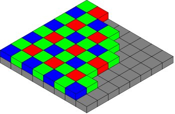

Hoe werkt een digitale camera sensor
Een digitale camera gebruikt een sensor oppervlak van enkele miljoenen kleine pixels om een zichtbaar beeld te construeren. Op het moment dat de opname knop wordt ingedrukt begint de belichting. Elke pixel kan gezien worden als een kleine badkuip met een afloop. Zolang de belichting niet begonnen is, worden de photonen die in de kuip vallen afgeleid via de afloop. Eens de belichting start gaat de stop in de afloop. Tot aan het einde van de belichting worden alle photonen verzameld. Hun energie wordt omgezet in een digitaal signaal dat de helderheid aangeeft op dat specifiek punt in het beeld.
 |
 |
Elke kuip kan de hoeveelheid photonen (licht) omzetten in een digitaal signaal. Wat de kleur is van het invallend licht kan echter niet gemeten worden. Om toch een kleurbeeld te kunnen reconstrueren plaats men een filter over elke kuip. Deze filter zal maar licht doorlaten van één bepaalde kleur. Zo goed als alle digitale camera's kunnen maar één bapaalde kleur opvangen in elke kuip, dwz dat ze 2/3 van alle invallend licht negeren. Dit wil eveneens zeggen dat de camera de intensiteit van de 2 andere kleuren moet benaderen door naar de naburige kuipen te kijken. De meest gebruikte filteropstelling is het "Bayer masker".
| Kleur Filter Masker  |
 |
|
|
Het kleurfilter masker (Bayer masker) is nodig opdat standaard sensoren een kleur beeld kunnen genereren. De lichtgevoelige receptoren zijn gevoelig voor het hele lichtspectrum. Zonder het filtermasker, kan een sensor enkel een zwart/wit beeld produceren. Met het filter detecteert elke sensor enkel rood, groen of blauw licht. |
Een Bayer masker bestaat uit wisselende rijen van rood-groen en groen-blauw filters. Het Bayer masker bevat dus 2 maal zoveel groene filters als rode of blauwe filters. Elke primaire kleur is niet evenredig vertegenwoordigd omdat het oog gevoeliger is voor groen licht dan voor rood en blauw licht. Door 2 maal zoveel groen licht op te vangen ziet het beeld er scherper uit dan het geval zou zijn indien alle kleuren evenredig vertegenwoordigd zouden zijn. Dit verklaart eveneens waarom er in het groen kanaal minder ruis is waar te nemen dan in de 2 andere kanalen.


Niet alle digital cameras gebruiken een Bayer filter, Dit is echter wel de meest gebruikte techniek. Een alternatief is de Foveon sensor die gebruikt wordt in de Sigma's SD9 and SD10. Deze sensor meet de 3 kleuren op elke pixel locatie. Sony camera's gebruiken een filter met 4 kleuren, nl. rood, groen, blauw en smaragd groen.
Bayer de-mosaïken
Bayer "de-mosaïken" is het translatieproces van wat de camera ziet door de Bayer filter in een afbeelding die de volledige kleurinformatie bevat voor elke pixel. Hoe is dit mogelijk als de camera niet de volledige kleurinformatie voor elke pixel heeft? Het antwoord is: interpolatie. Ipv van elk locatie apart te beschouwen kunnen we elke 2x2 matrix zien als één pixel die alle kleurinformatie bevat.
 |
—> |  |
Dit zou een goede oplossing zijn ware het niet dat we hierbij een groot deel van onze resolutie verliezen. Als de camera informatie in een 2x2 matrix in beschouwd als behorend tot één pixel hebben we zowel horizontaal als vertikaal maar een halve resoltie. Door overlappende 2x2 matrixen te gebruiken kunnen we een hogere resolutie bereiken dan met een simpele 2x2 matrix.
|


Het resultaat is een beeld dat een vrij accurate weergave van de werkelijkheid is in uniform gekleurde delen van het beeld. Maar met een verlies aan resolutie in de randen wat zich uit in minder scherpte, minder detail en kleurartefacten bij de overgangen.
Origineel |
—> | Gerecontrueerd |
Er bestaan andere de-mosaïk algoritmes die een iets grotere resolutie hebben en minder artefacten vertonen. Sommige algoritmes passen hun strategie op lokaal niveau aan, naargelang de inhoud van het beeld op die plaats.